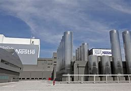
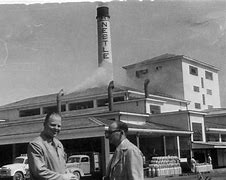
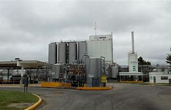

Bienvenido a Nestlé
Nestlé es la compañía de alimentos y bebidas más grande del mundo, presente en 189 países. Nos dedicamos a mejorar la calidad de vida y a contribuir a un futuro más saludable.



Nuestro propósito
Desarrollamos todo el poder de la alimentación para mejorar la calidad de vida, hoy y para las futuras generaciones.
Valores
Respeto por nosotros mismos. El respeto comienza por Respetarse uno mismo y siendo fieles a quién somos, para después actuar con integridad, honestidad,autenticidad. y pasión.
Respeto a los demás. El respeto por los que nos rodean y por todos aquellos con quienes interactuamos. Este se amplía a todos los actores que nos hacen llegar a los peruanos y sus familias: Proveedores,, colaboradores, distribuidores, pequeños comerciantes y consumidores.
Respeto por la diversidad El respeto por las diferentes formas de pensar, por las culturas, en todas nuestras interacciones, tanto dentro como fuera de nuesetra compañía. En las diferencias se encuentran las oportunidades para mejorar.
Respeto por el futuro. El respeto por el futuro de nuestro mundo, por las familias, y por las generaciones que nos siguen y nos obliga a actuar con responsabilidad, buscando continuamente formas de reducir el impacto de nuestra operación.